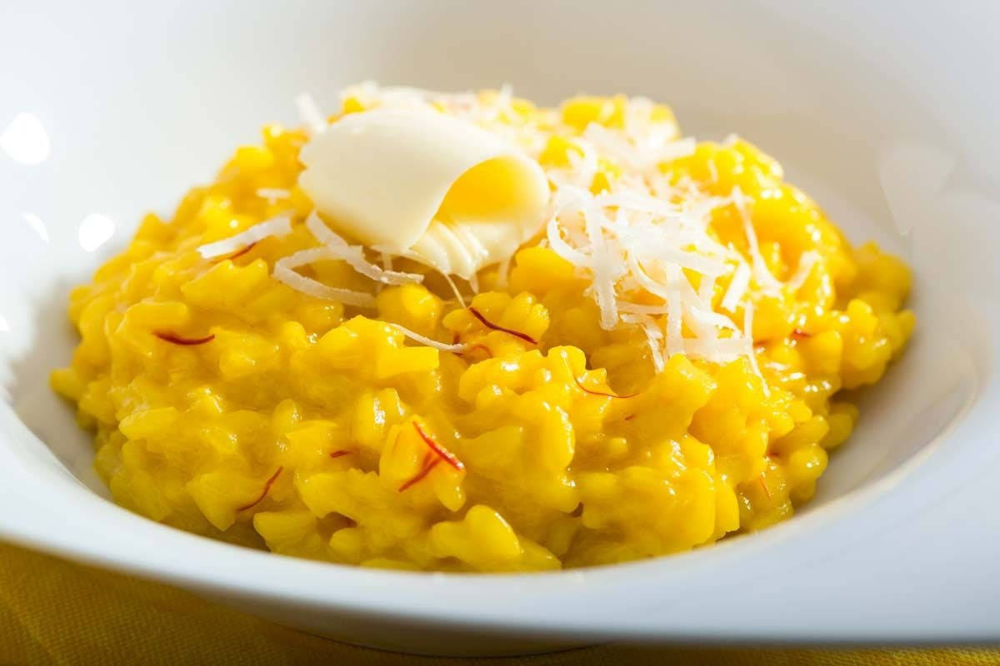

Risotto alla Milanese
Milan Risotto
Risotto alla Milanese is a classic Italian dish from Milan,
known for its creamy texture and vibrant saffron flavor.
This elegant yet simple recipe makes for a delightful and authentic Italian meal.

1 Ingredients
- 1 and half cups Arborio rice
- 4 ups of dry white wine
- Finely chopped onion
- 2 tablespoons of butter
- 2 tablespoons of olive oil
- 1/4 teaspoon saffron threads
- 1/2 cup grated Parmesan cheese
- Salt and pepper to taste
2 Prepare broth and saffron
- Heat broth in saucepan
- Soak saffron threads in warm water
3 Toast rice
- Heat olive oil and butter in large pan
- Cook chopped onion until soft
- Add rice in pan and stir for 2 minutes
4 Add wine and saffron
- Pour in wine and saffron including water
- Cook together with rice for 18-20 minutes
- Remove from head and add butter and Parmesan
- Season with salt and pepper to taste
Enjoy your smooth creamy and delicious Risotto alla milanese while hot!